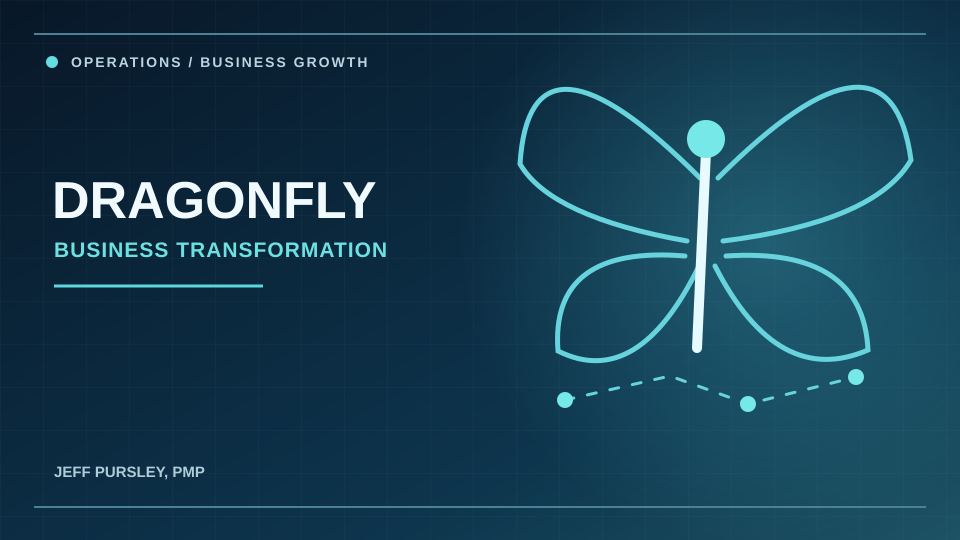
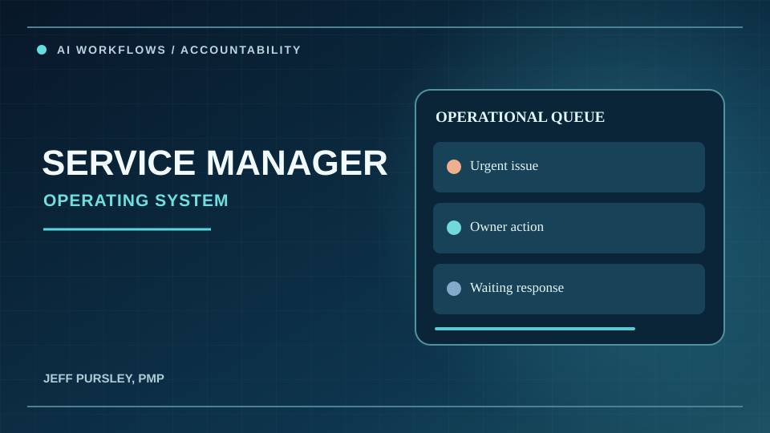
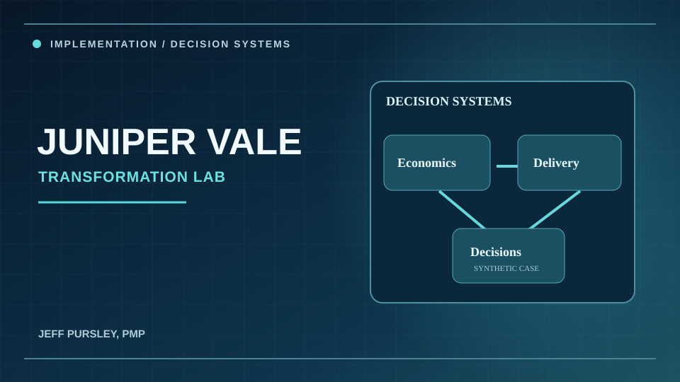
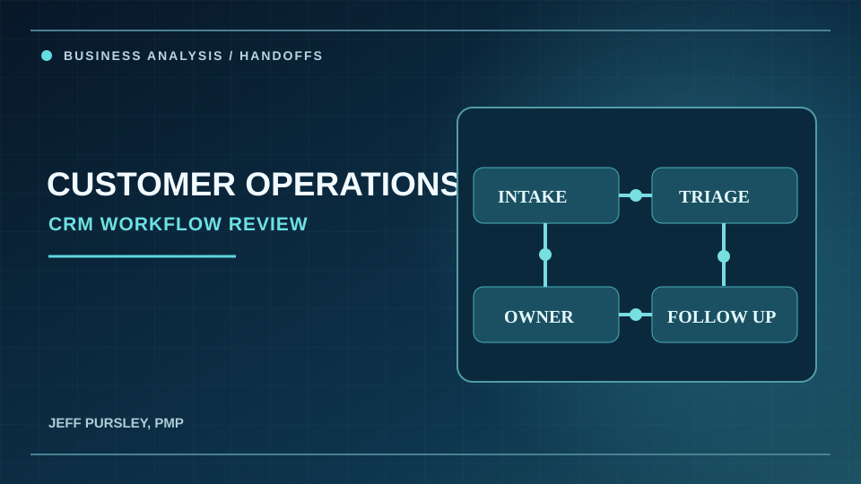

Operations & Business Strategy
Workforce capacity, service delivery, customer handoffs, operating models and performance management.
Explore operations experience ↗Operations leadership · Project delivery · AI implementation
Jeff Pursley, PMP
I help organizations improve operations, deliver complex projects, and put practical technology to work. My background combines real business leadership with project management, business systems and AI-assisted workflow design.
Woodstock, Georgia · Atlanta Metropolitan Area
Featured work
Operating experience, real consulting engagements and independently built technology demonstrations. Each case connects to supporting evidence.

REAL BUSINESS LEADERSHIP
How I helped build and operate a service business, from people and routing to operating economics and scalable systems.

REAL CONSULTING & CONFIGURATION
AI-assisted management workflows designed around urgent issues, accountable ownership, follow-through and daily operational briefings.

INDEPENDENT SYNTHETIC CASE
An interactive transformation model connecting operating economics, implementation controls and business decisions for a fictional organization.

REAL BUSINESS PROCESS REVIEW
Analysis and recommendations for customer intake, escalation, CRM handoffs and clear follow-up ownership.
What I do
The strongest business systems start with understanding the people, operations and decisions behind them.
Workforce capacity, service delivery, customer handoffs, operating models and performance management.
Explore operations experience ↗Requirements, stakeholder coordination, delivery controls, testing, implementation planning and adoption.
Explore project work ↗Workflow rules, classification, prioritization, exception management and human-centered automation.
Explore AI implementation ↗How I approach change
A practical method for planning change, shaped by my operational experience and project management training.
Map the problem and how the work gets done.
Define requirements, decisions and ownership.
Coordinate teams, systems and adoption.
Review outcomes, exceptions and next steps.
About Jeff
My background comes from the decisions that keep a service business operating: hiring, staffing, dispatch, customer needs, vendor issues and solving problems when plans change.
I co-built and helped operate Dragonfly Mosquito & Pest Specialists as it grew to approximately 21 employees. I later led around 15 team members across five markets at Safe Haven and supervised roughly 25 licensed professionals at TogetherHealth. That perspective shapes how I approach operations improvement, project delivery and practical AI.
Skills & tools
Practical platforms and methods from operations leadership, project management and technical case work.
PestPac · FieldRoutes · GorillaDesk · Jobber · Route4Me · QuickBooks Online · SecurityTrax
Jira · Confluence · Scrum · Requirements · Stakeholder coordination · UAT · Risk tracking
Google Workspace · Gmail · Gemini · Workspace Studio · Workflow design · Human oversight
Excel models · KPI analysis · Process mapping · SQL case work · Release testing
Open models, executive briefs, requirements, implementation documents and technical demonstrations.
Get in touch
Interested in operations leadership, project management, business systems and practical AI implementation opportunities in the Atlanta area and beyond.